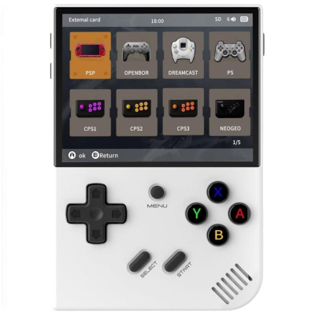
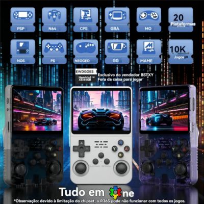
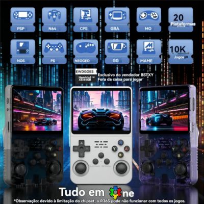

| Pocket Games - Tudo sobre consoles portáteis | |
|---|---|
|

 

Matérias da SemanaOs emuladores portáteis estão cada vez mais populares entre os fãs de jogos retrô, oferecendo a possibilidade de reviver clássicos em qualquer lugar. Compactos, acessíveis e com vastas bibliotecas de jogos, eles são uma ótima alternativa para quem busca nostalgia e praticidade. Confira nas matérias abaixo alguns dos modelos mais buscados, devido a seu desempenho e valores acessíveis: |
|

R36Sé um console retrô portátil que combina design moderno com funcionalidades avançadas, conquistando o coração dos fãs de jogos clássicos. Equipado com hardware robusto e uma interface intuitiva, o R36s suporta uma vasta biblioteca de emuladores... 
Miyoo Mini PlusCom um design compacto, tela nítida e excelente autonomia de bateria, ele rapidamente se tornou um dos favoritos entre os gamers nostálgicos. Equipado com um processador eficiente e suporte a uma ampla gama de emuladores... 
Anbernic RG35xx PlusCom uma tela IPS de alta qualidade e controles ergonômicos, ele proporciona uma experiência de jogo imersiva e confortável. O dispositivo suporta uma ampla gama de emuladores, desde consoles clássicos de 8 bits até plataformas mais avançadas... |
|
|
www.pocketgames.com |
|